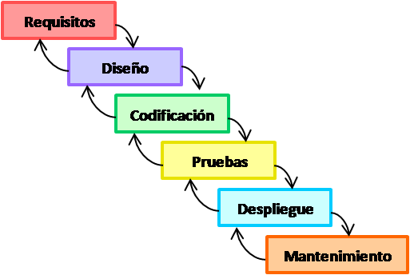

Modelos de desarrollo: tradicionales vs alternativos
Definición y etapas
La formalización del proceso de desarrollo se define como un marco de referencia denominado ciclo de desarrollo del software o ciclo de vida del desarrollo del software. La ISO, en su norma 12207 define al ciclo de vida del software como un marco de referencia que contiene las actividades y las tareas involucradas en el desarrollo, la explotación y el mantenimiento de un producto software, abarcando desde la definición hasta la finalización de su uso.
Análisis: Construye un modelo a partir de la toma de los requisitos Diseño: A partir del modelo de análisis se deducen las estructuras de datos, la estructura en la que descompone el sistema y la interfaz de usuario. Codificación: Construye el sistema. La salida de esta fase es código ejecutable. Pruebas: Se comprueba que se cumplen criterios de corrección y calidad. Mantenimiento: En esta fase, que tiene lugar después de la entrega se asegura que el sistema siga funcionando y adaptándose a nuevos requisitos.
Modelos de desarrollo: tradicionales vs alternativos
Modelos tradicionales: Cascada, prototipo y espiral
Modelo Cascada
Se lo conoce como modelo cascada o modelo de ciclo de software ya que muestran los procesos en los que pasará porque muestra como una fase pasa a otra para crear de forma correcta ese producto , las etapas que lleva este modelo son los siguientes
Análisis: Son las necesidades del usuario que necesita, como las restricciones y metas que va a necesitar el sistema, es por eso que cada vez que vamos a realizar la fabricación de un producto lo primero que hacemos es consultar con el cliente en lo que desea, especificando lo que necesita Diseño: Son elemento que se desarrollaran por partes, como el hardware y el software, estableciendo como resultado la arquitectura completa del sistema, el diseño identifica y describe lo fundamental del software. Codificación: Llevarla programación de cada elemento por separado, llamado también pruebas aisladas por que cada elemento debe de cumplir con algo en específico y verificar si lo que hace es correcto o no. Integraciones: Aquí donde toman los elementos que habían sido separados y los unen para saber si cumple con el requerimiento completo, después de eso se lo entrega al cliente como prototipo Mantenimiento: En esta parte se pone en funcionamiento el sistema que se ha creado con el fin de encontrar los errores que no se habían descubierto en las etapas anteriores en el producto o mejorar o añadir nuevos requerimientos al sistema.

Modelo Cascada
Modelo Espiral
Es un proceso que muestra la secuencias y la retrospectiva de una con la otra de las actividades, por eso se lo representa como una espiral, este modelo fue propuesto por Boehm (Boehm,1988), sus ciclos en espiral representan el proceso del software de cada fase, como ejemplo que un ciclo representa los requerimientos, otro ciclo representa el diseño, así sucesivamente.
Este modelo es utilizado por desarrollar software para diferentes versiones actualizadas como lo hacemos actualmente para programas de PC´S modernas. Es un enfoque que se utiliza actualmente Contiene una etapa de análisis de riesgos que no se incluía anteriormente.

Modelo Espiral
Modelo de Construcción de Prototipos
Como su nombre lo indica se basa en crear prototipos del producto para demostrarle al cliente si es lo que quiere caso contrario se volverá a crear otro prototipo del mismo producto solo que con cambios o ajustes diferentes y así sucesivamente con varios prototipos hasta que el cliente nos diga que sí y se sienta seguro de lo que creamos para él sea el producto correcto. La finalidad de este modelo es crear al principio un prototipo con un diseño rápido del producto pero con los requisitos que pidió al principio el cliente , será después al momento de demostrarle al cliente el primer prototipo que hemos hecho, porque será él quien lo evaluará y así podemos ver los requisitos que definió al principio son o no y también los requisitos que no pudieron ser aún más definidos, para que luego el cliente reafirma los requisitos que quiere que cumpla el producto.